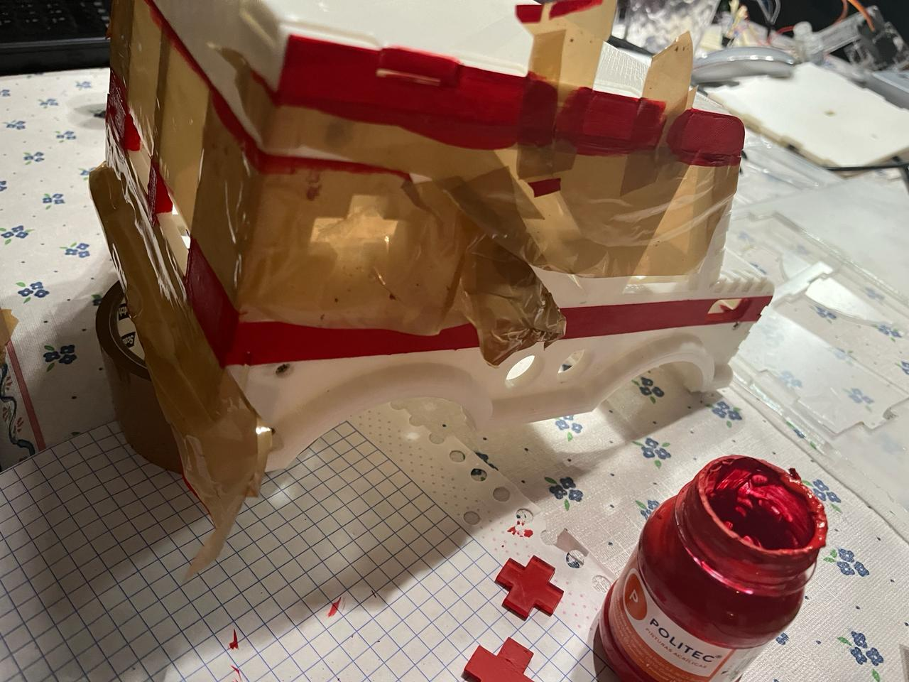
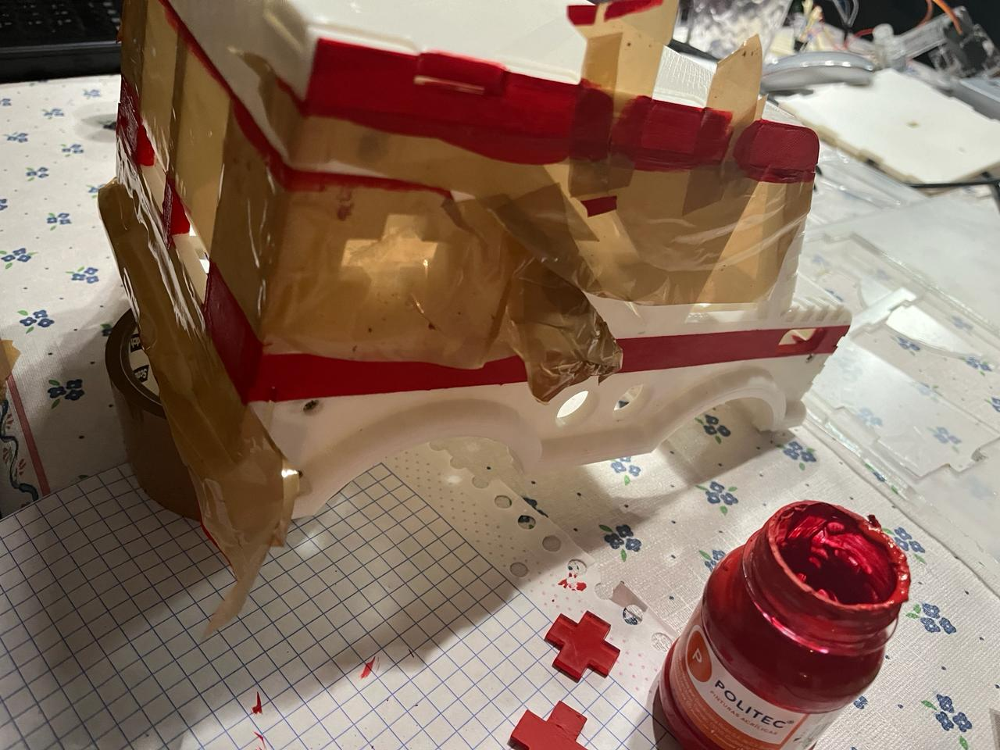

| First Day of Formal Activities |
|---|
| January 08, 2024 |
| We formally started with the activities. On this first day, only a few things were talked about the challenges of the competition, taking into account how we were going to participate in each of them, along with the necessary materials to start with the elaboration of the robot, some of these being: the raspberry, jumpers, necessary sensors, etc. |
| Assembling the prototype |
|---|
| January 09 - January 10, 2024 |
| We started building the robot with a prototype that we already had pre-assembled, with the implementation of the raspberry, the H-bridge, arduino UNO and also with the connections on top of the chassis to complete a base design. |
| First remote-controlled movement |
|---|
| January 11, 2024 |
| With eager anticipation, we began the process of configuring the robot to respond to commands from a PlayStation 4 controller, a versatile tool that promises fluid movement and precise control. The initial steps involved meticulous calibration to ensure seamless interaction between the controller and the robot. We meticulously mapped out the controls, assigning specific functions to each button and joystick. Forward motion, backward traversal, graceful turns, speed modulation – every aspect meticulously crafted to empower our robot with a diverse range of movements. As we delved deeper into the setup, we were struck by the intricacies involved in enabling our creation to respond to our commands with agility and precision. Each adjustment brought us closer to our goal of a seamlessly responsive robotic companion. |
| Line Follower (Lava Palava) |
|---|
| January 15, 2024 |
| Work began on the code to implement the line tracker for the lava palava test of the competition. Using two sensors that for now only detect the color black, however, we realized that it didn't work quite right because we had problems with the position of the sensors, sometimes resulting in them being too low or too high, so the movement of the robot was not smooth. |
| Design Modifications |
|---|
| January 16, 2024 |
| In our quest for optimal performance and efficiency, we embarked on a thorough review and redesign of the wiring layout and sensor placement on our robot. Recognizing the critical role that organization plays in ensuring smooth functionality, we spared no effort in refining every aspect of the setup to achieve a higher degree of order and precision. The first step in this process involved a meticulous examination of the existing wiring configuration and sensor placements. We carefully assessed the strengths and weaknesses of the current setup, identifying areas for improvement and optimization. Armed with insights gained from our analysis, we set out to implement a series of strategic modifications. With precision and care, we restructured the wiring harness, meticulously routing cables and connectors to minimize clutter and maximize accessibility. Each wire was painstakingly positioned to eliminate interference and reduce the risk of tangling, ensuring a streamlined and efficient electrical system. |
| Code Migration, batteries and eco disaster stage |
|---|
| January 18, 2024 |
The migration of the codes that were in the raspberry pi 4 to the raspberry pi 5 began to be carried out, however, problems were found with one of the libraries, which is why it took longer than expected. In the end we found that the error was that the library was no longer supported, so another one had to be implemented.  |

| New robot design |
|---|
| January 19, 2024 |
| "Embarking on the journey of designing our new robot was a thrilling endeavor filled with anticipation and creative energy. With the lessons learned from our previous prototype guiding us, we eagerly delved into the initial phases of conceptualization and planning. The first order of business was to establish a clear approach for our new design. Drawing upon our collective expertise and innovative spirit, we engaged in brainstorming sessions to explore various concepts and strategies. After careful consideration and deliberation, we arrived at a vision that encapsulated our aspirations for the next iteration of our robot. With our vision firmly in place, we set out to translate it into tangible form. Armed with measuring tools and a keen eye for detail, we embarked on the meticulous process of taking measurements to ensure that our robot would meet the size specifications mandated by the competition rules. Every dimension was carefully recorded, every angle meticulously noted, as we sought to strike the perfect balance between size, agility, and functionality. |


| Scenario for "Escape Route" and code migration. |
|---|
| January 22, 2024 |
Embarking on the construction of the 'Escape Route' challenge track was an endeavor filled with creativity and meticulous planning. With the goal of creating an engaging and dynamic obstacle course, we set out to transform ordinary boxes into formidable barriers that would test the agility and problem-solving skills of our robot.
The first step in this process involved carefully selecting the materials for our obstacles. Armed with precision tools and a keen eye for detail, we began by cutting out boxes of varying sizes to serve as the building blocks of our track. Each box was meticulously crafted to ensure uniformity and durability, laying the foundation for the challenges that lay ahead.
With the raw materials in hand, we turned our attention to the artistic aspect of the project. Recognizing the importance of visual cues in guiding our robot through the course, we meticulously painted each box with its corresponding color, adding a vibrant and visually appealing element to the track. Each stroke of the brush was carefully applied, transforming plain cardboard into colorful obstacles that would capture the imagination of spectators and participants alike. 
|
| Second prototype and implementation of batteries |
|---|
| January 24, 2024 |
| The second prototype designed previously was worked on in SolidWorks, cutting the result out of MDF material to obtain our base for the second prototype. Once the base is obtained, we begin with the reconnection of elements, starting with the implementation of the batteries that serve as a source of energy for the motors. |

| Webcam recognition |
|---|
| January 25, 2024 |
| We managed to get the raspberry 4, with which we were first carrying out tests before moving the functional codes to the raspberry 5, to recognize the webcam that the robot will use for some of the tests, taking some photos to check its correct operation. |

| Implementation of batteries and power bank |
|---|
| January 26, 2024 |
| Embarking on the quest for improved performance and reliability, we initiated a series of rigorous tests to evaluate a new power source for both the motors and the Raspberry Pi, the brain of our robot. Recognizing the critical role that power stability plays in ensuring smooth operation and longevity, we spared no effort in exploring alternatives to enhance our system. The first phase of our testing regimen involved the integration of batteries to power the motors, replacing the previous power source. We meticulously selected batteries known for their high capacity and reliable performance, ensuring they could meet the demanding energy requirements of our robot's motors. With the new power source in place, we conducted a battery of tests to assess its effectiveness in providing consistent and reliable power to drive the motors. Simultaneously, we turned our attention to the power needs of the Raspberry Pi, the central processing unit of our robot. In our pursuit of uninterrupted operation, we introduced a power bank as an alternative power source, designed to provide a stable and reliable supply of electricity to the Raspberry Pi. Through a series of comprehensive tests, we evaluated the power bank's ability to sustain the Raspberry Pi's operations under various load conditions, ensuring seamless performance in demanding situations. |
| Line follower |
|---|
| January 29, 2024 |
| Progress on refining our line follower system persisted as we delved deeper into optimizing the functionality of our sensors. Recognizing the pivotal role that sensor height plays in accurate line detection, we embarked on a series of meticulous tests to determine the optimal positioning for our sensors. With precision and attention to detail, we meticulously varied the height of the sensors, systematically testing their performance at different elevations above the surface. Each test was carefully conducted, with data meticulously recorded and analyzed to identify the height range that yielded the most reliable and consistent results. In our quest for precision, we crafted a small base to securely hold the sensors at varying heights above the ground. This base served as a stable platform, ensuring consistent placement and minimizing external factors that could influence the test results. With the sensors securely mounted, we conducted a battery of tests, meticulously observing their performance as our robot navigated simulated line-following scenarios. As the tests progressed, patterns began to emerge, providing valuable insights into the optimal sensor height for accurate line detection. Through iterative experimentation and analysis, we honed in on the ideal sensor placement, striking a delicate balance between proximity to the surface and sensitivity to line markings. |
| Encoder management and infrared sensors |
|---|
| January 30, 2024 |
| Encoders and infrared sensors were placed that will measure the speed at which the tires will rotate so that the robot stops in a straight line without deviating too much to one side. Likewise, work began on the idea of building a chassis that allows the front wheels to rotate at respective angles to achieve more fluid movement in the robot. |

| Attempt: PID Handling |
|---|
| January 31, 2024 |
| The refinement of our robot's configuration entered a critical phase as we focused on optimizing elements such as the encoders to enhance its navigation capabilities. With the goal of enabling our robot to autonomously correct its trajectory, we embarked on the implementation of a PID (Proportional-Integral-Derivative) control system. The journey towards implementing PID control began with the utilization of Arduino, a versatile microcontroller platform known for its flexibility and ease of use. Leveraging the robust capabilities of Arduino, we developed and fine-tuned the PID control algorithm to analyze data from the encoders and calculate precise adjustments to the robot's trajectory in real-time. Through iterative testing and adjustment, we honed the PID parameters to achieve optimal performance, ensuring that our robot could swiftly and accurately correct its course in response to deviations from the desired path. With the Arduino serving as the initial testing ground, we validated the effectiveness of the PID control system in enhancing our robot's navigation capabilities. |

| Third prototype for the robot |
|---|
| February 02, 2024 |
| We started working on our third prototype for the robot, this time with cardboard in order to facilitate the task of the design approach and location of each of the elements. This design could be the final one, so we are making sure that everything is in the right place and with the right measurements. |


| Robot design 2.0 |
|---|
| February 06, 2024 |
| We continue working on the prototype of our robot, adding a second floor and beginning to design the structure it will have in order to meet the theme requirement for obtaining extra points, inspired by the “star wars” movies with the legendary Millenium Falcon. |
| Robot design 2.1 |
|---|
| February 07, 2024 |
| We worked on our new design with the help of Solidworks in order to make the chassis and the decorative parts of our car so that we could make the cuts in MDF. |

| Serial pin communication, libraries and parallel programming |
|---|
| February 16, 2024 |
| Serial pin communication was investigated and implemented. Like, the implementation of the library to use the PS4 control. And also, the Implementation of parallel programming in python to program both the handling of the PS4 control with the rest of the algorithms. |

| Engine changes |
|---|
| February 23, 2024 |
| The motors to be used were changed, due to the search for better performance, in addition to facilitating adequate control of the robot, which also required considering changes in the design. |

| Robotic arm and Nerf dart shooter |
|---|
| March 1th, 2024 |
| It began with the design of a robotic arm to challenge the ecological disaster. Additionally, the design of a Nerf dart shooter for zombies began. And the development of the design of the piece to adjust the balloons began. |
| Implementation of PID control and the camera |
|---|
| March 8, 2024 |
| The development of the robot design was implemented, remaining only in development in SolidWorks. Likewise, the implementation of PID control began. And the server implementation for the camera for the escape route challenge began. |
| Structure of the robot |
|---|
| March 15, 2024 |
| During the week, adaptations were made to the structure of the robot, due to changes in the components to allow better functioning in the different competitions. In addition, these structures were made with acrylics of different thicknesses to be sure of the composition of the final model, which will also be. (3d model for printing with filament and printed model) |
 

| Final Corrections |
|---|
| March 22, 2024 |
| Codes on the autonomous control of the robot were complemented in the dynamics of the line follower, in addition to correctly configuring the camera to be able to remotely show the view of the robot. |


| Final Design |
|---|
| March 29, 2024 |
| This would be our final design, which is an ambulance because we are oriented more towards the part that they are natural disasters and this ambulance comes to resolve and repair said natural disasters that are happening, going through different types of tests. |


| Testing and evidence |
|---|
| April 5, 2024 |
| As we can see, on this day we are dedicated to testing the car with all the functionalities for all the tests. As you can see below: |